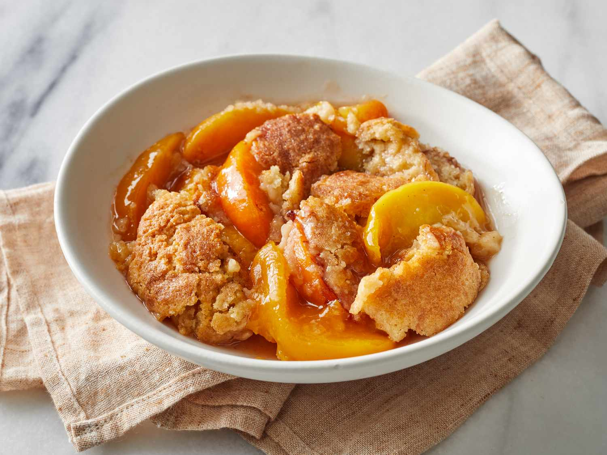

Peach Cobbler

Description
A cobbler — not to be confused with a crisp or crumble
— is a deep-dish fruit dessert with a sweetened fruit
filling that is topped off with a biscuit-like dough.
The dough may cover the entire dish or be dropped by
the spoonful, earning it the name "cobbler" for its
resemblance to a cobblestone street. It gives you the
same fruit-and-pastry combination as pie, but without
all the effort.
In the case of peach cobbler, fresh, frozen, or canned
peaches may be combined with sugar, spices, lemon juice,
and cornstarch (for thickening). As with all cobblers, it's
finished off with a biscuit-like topping and sprinkled with
a cinnamon-sugar mixture.
Prep Time: 20 mins
Cook Time: 40 mins
Total Time: 1 hr
Ingredients
- 8 fresh peaches - peeled, pitted and sliced into thin wedges
- ¼ cup white sugar
- ¼ cup brown sugar
- ¼ teaspoon ground cinnamon
- ⅛ teaspoon ground nutmeg
- 1 teaspoon fresh lemon juice
- 2 teaspoons cornstarch
- 1 cup all-purpose flour
- ¼ cup white sugar
- ¼ cup brown sugar
- 1 teaspoon baking powder
- ½ teaspoon salt
- 6 tablespoons unsalted butter, chilled and cut into small pieces
- ¼ cup boiling water
- 3 tablespoons white sugar
- 1 teaspoon ground cinnamon
Instructions
- Gather all ingredients.
- Preheat the oven to 425 degrees F (220 degrees C).
- Combine peaches, 1/4 cup white sugar, 1/4 cup brown sugar,
1/4 teaspoon cinnamon, nutmeg, lemon juice, and cornstarch
in a large bowl; toss to coat evenly, and pour into a 2-quart
baking dish. Bake in preheated oven for 10 minutes.
- Meanwhile, combine flour, 1/4 cup white sugar, 1/4 cup brown
sugar, baking powder, and salt in a large bowl. Blend in butter
with your fingertips or a pastry blender until mixture resembles
coarse meal. Stir in water until just combined.
- Remove peaches from oven, and drop spoonfuls of topping over them.
- Mix 3 tablespoons white sugar and 1 teaspoon cinnamon together in a small bowl;
sprinkle over entire cobbler.
- Bake in the preheated oven until topping is golden, about 30 minutes.